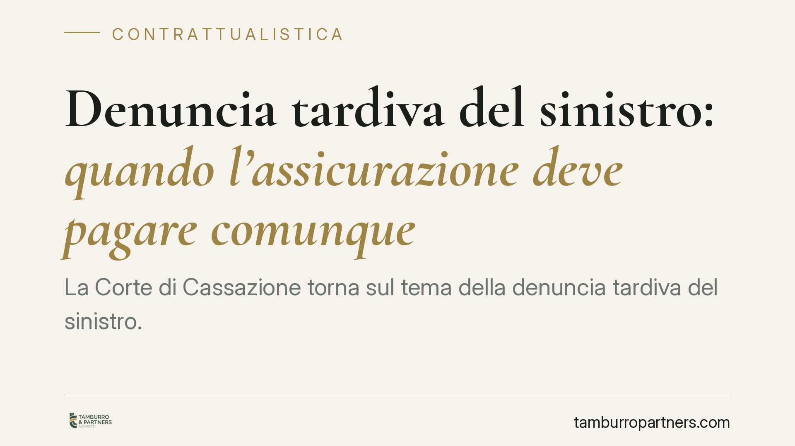

Denuncia tardiva del sinistro: quando l'assicurazione deve pagare comunque
La Corte di Cassazione torna sul tema della denuncia tardiva del sinistro. Il ritardo dell'assicurato non basta, da solo, a giustificare il rifiuto di pagamento: la compagnia perde la copertura solo se prova un intento fraudolento dell'assicurato. Una distinzione decisiva, che sposta l'onere probatorio e ridimensiona le eccezioni sollevate dalle assicurazioni.

Il caso
Un assicurato denuncia un sinistro oltre i termini contrattualmente previsti. La compagnia oppone la tardività e rifiuta l'indennizzo. La Cassazione civile, Sezione III, riporta la questione nei suoi binari corretti: il semplice ritardo non estingue automaticamente il diritto al risarcimento.
La decisione conferma un orientamento consolidato ma spesso disatteso nella prassi liquidativa: distinguere tra inadempimento colposo e comportamento doloso è determinante per stabilire chi paga e cosa.
Inquadramento normativo
Due norme del Codice civile regolano la materia.
L'art. 1913 c.c. impone all'assicurato di dare avviso del sinistro all'assicuratore entro tre giorni da quando ne ha avuto conoscenza (salvo diverso termine di polizza). È un onere di collaborazione, pensato per consentire alla compagnia di verificare tempestivamente cause ed entità del danno.
L'art. 1915 c.c. disciplina le conseguenze dell'inadempimento e introduce la distinzione chiave. Se l'assicurato omette dolosamente l'avviso, perde il diritto all'indennità. Se l'omissione è colposa — cioè dovuta a negligenza, dimenticanza o disorganizzazione, ma senza intento di frodare — l'assicuratore può soltanto ridurre l'indennità in proporzione al danno che ha effettivamente subìto per il ritardo.
La Cassazione ribadisce che il dolo, per far scattare la decadenza totale, deve consistere in una precisa volontà di arrecare pregiudizio all'assicuratore, ad esempio ostacolando gli accertamenti. Non basta il ritardo in sé, né la sua durata.
Implicazioni pratiche
Il punto operativo è l'onere della prova. Non è l'assicurato a dover dimostrare la propria buona fede: è la compagnia a dover provare il dolo e, in mancanza, l'effettivo pregiudizio subìto per effetto del ritardo.
Questo ribalta una prassi diffusa. Molte compagnie utilizzano la tardività come clausola di stile per respingere le richieste, senza indicare quale danno concreto abbia loro provocato la denuncia in ritardo. Alla luce di questo indirizzo, un rifiuto motivato solo dalla tempistica è vulnerabile.
Per l'assicurato colpevole di semplice ritardo, la conseguenza peggiore è una riduzione dell'indennizzo, non l'azzeramento. E la riduzione deve essere ancorata a un pregiudizio dimostrato: se la compagnia ha comunque potuto istruire correttamente la pratica, il margine per decurtare è ridotto.
La questione interessa anche i rapporti tra imprese, come nel caso del subappaltatore che denuncia in ritardo un danno coperto da polizza. Anche in ambito commerciale la regola non cambia: conta l'elemento soggettivo, non solo il calendario.
Cosa fare in concreto
- Rispettate comunque i termini di polizza. Il principio giurisprudenziale non è un lasciapassare: la via più sicura resta la denuncia tempestiva, entro i tre giorni di legge o nel diverso termine pattuito.
- Documentate le ragioni del ritardo. Se l'avviso arriva oltre i termini, conservate ogni elemento che dimostri l'assenza di intenti fraudolenti (ricoveri, assenze, comunicazioni interne, difficoltà organizzative).
- Contestate i rifiuti generici. Di fronte a un diniego basato solo sulla tardività, chiedete per iscritto quale danno concreto la compagnia assume di aver subìto per effetto del ritardo.
- Verificate le clausole contrattuali. Alcune polizze prevedono termini e decadenze specifiche: leggetele prima della sottoscrizione e conservate copia integrale delle condizioni.
- Valutate l'azione entro i termini di prescrizione. Il diritto all'indennizzo ha termini precisi: rivolgetevi a un professionista prima che maturino, senza attendere l'esito delle interlocuzioni con la compagnia.
Nota conclusiva
La pronuncia riporta equilibrio nel rapporto tra assicurato e assicuratore. Il ritardo resta un inadempimento e va evitato, ma non può trasformarsi in un pretesto automatico per non pagare. Chi gestisce una polizza — privato o impresa — dovrebbe conoscere questa distinzione prima ancora che sorga il sinistro.
---
*Contributo informativo a cura di Tamburro & Partners - Avv. Giuseppe Tamburro. Non costituisce parere legale.*
Ogni contratto ha il suo equilibrio.
Se vuoi una revisione delle clausole o una redazione su misura, scrivi allo studio. Ti rispondiamo entro un giorno lavorativo.